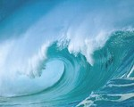

E poi c'é il mare. Oggi é poco mosso, l'onda più alta non ha superato il metro d'altezza. Comunque é tutto un movimento. Le onde si rincorrono a una a una e si richiamano gridando. Un'onda s'innalza, sembra fermarsi, s'increspa, s'imbianca e poi s'abbatte contro la riva, ribollendo di schiuma effervescente. E son tutte così, chi più, chi meno. C'é quella che sembra innalzarsi e non finirebbe mai di farlo se non che anch'essa improvvisamente tentennando, sbuffi di bianco ricadendosi addosso. C'é quella che, calma calma, senza quasi farsi notare arriva fin sulla spiaggia e invece di fermarsi lì, va avanti e per poco non mi bagna i piedi. Se tutte le onde sono parallele alla riva, ci son quelle che per farsi notare girano un poco a destra, non fosse che a fianco vi sia quell'altra che invece vuol girare a sinistra, così si ritrovano a metà strada, scontrandosi e sbuffando di spruzzi ancor prima di arrivare al traguardo. E già, perché per le onde é un vero e proprio divertimento. Se pensi che per anni e anni sono rimaste a vagare in mezzo a qualche oceano e l'unica cosa che pensassero fosse quella di toccare terra, capisci come per loro, arrivarci tutte alte, gonfiando il petto per salutare con orgoglio quel lembo di spiaggia dimenticata, sia di una soddisfazione enorme. Passati mesi e mesi e mesi in tranquillità, chiacchierando con calma con le onde vicine ricordandosi dei giorni passati nei fiumi, e poi... il primo giorno! Il giorno in cui videro l'orizzonte! Com'era bello, così liscio, piatto, lontanissimo... Quanti pensieri turbinavano nell'acqua immaginandosi il giorno in cui l'avrebbero raggiunto, o magari solamente sfiorato... magari! Altri giorni fantasticavano di dove sarebbero arrivate e, tra fiordi norvegesi e le interminabili spiagge di Bali, nasceva il dubbio di arrivarci con il mare calmo, per loro era la peggior cosa che avrebbe potuto capitargli. Tutta la loro vita é una continua avventura. Dico continua perché é molto difficile per loro morire, ormai saranno quasi sei miliardi di anni, e penso proprio che se andrà avanti così, ne camperanno almeno altrettanti. E' arduo spiegare la giornata di un'onda, presa così com'è a cambiar ruolo ogni volta che le conviene. Si potrebbe partire dalle nuvole, poi scendere nelle rapide dei fiumi, arrivare al mare e poi sotto, trascinati dalle correnti marine se va bene, fare un giro per l'oceano e poi arrivare da qualche parte, una baia, uno scoglio o chessoaltro. Uno magari pensa che tra tutto questo andare e venire ci si possa stancare, ma é così bello incontrare nuova gente e chiacchierare, scambiarsi idee e racconti da paesi lontanissimi, stare a vedere quello che fanno dentro e fuori dall'acqua gli altri. Già, gli altri. Ce ne sono così pochi che stanno ad ascoltare le onde, a me, prima di tornare su tra le nuvole e rincominciare una nuova giornata, mi hanno salutato, io le ho viste e gli ho risposto. Erano così contente, tutte spumeggianti di schiuma bianca, e sentissi come urlavano ”Ci troviamo tra un'ora...” diceva una, e l'altra ”Va bene, ci vediamo dopo!”. Giurerei che erano più alte di un metro.